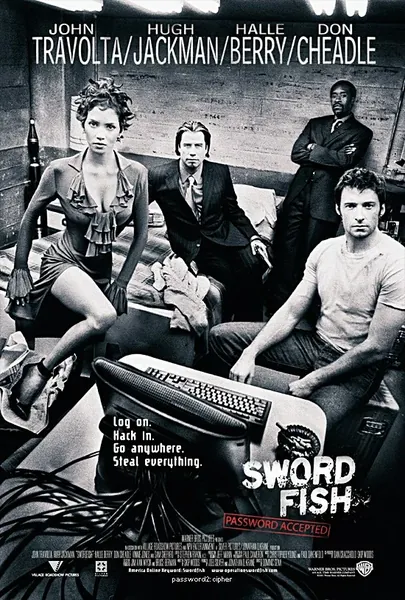

Пароль «Рыба-меч»
Swordfish
2001
Криминал, Триллер
Бизнесмен и террорист Гэбриэл Шир вербует Стэнли Джобсона — хакера, только что вышедшего из тюрьмы, — для выполнения одной задачи: за 60 секунд, под дулом пистолета и на фоне отвлекающего шоу, перевести 9,5 миллиарда долларов из средств правительства США. Знаменитая сцена взлома, стильные перестрелки и постоянный вопрос о том, кто же на самом деле кого использует. Это голливудская фантазия о хакерах, где нет ни капли правдоподобия, — и всё же сюжетная линия о ловушке, устроенной ради «последнего дела», выглядит убедительно.
Описание на английском
Terrorist businessman Gabriel Shear recruits Stanley Jobson, a hacker just out of prison, for one task: in 60 seconds, under gunpoint and amid a distracting show, transfer 9.5 billion dollars of US government money. A famous hacking scene, stylish gunfights and a running question of who is really using whom. A Hollywood fantasy about hacking where nothing is plausible — and yet the story of the 'one last job' trap is convincing.